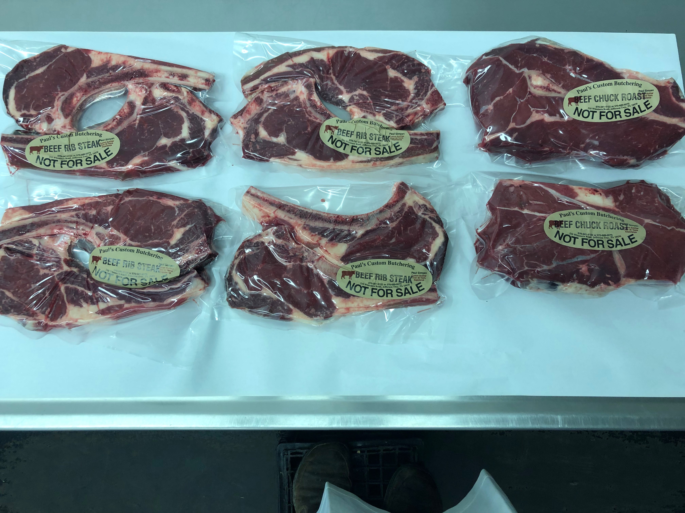
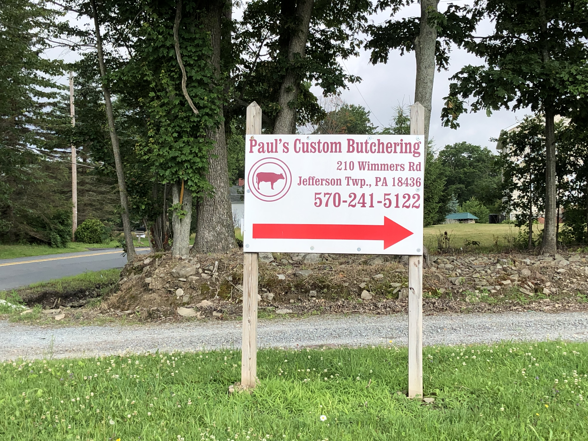

Paul's Custom Butchering LLC is a licensed, custom butchering facilty. We are available to process beef, pigs, lambs, goats, deer, and bear. Currently we only accept cash or check as forms of payment.
We are proud supporters of local 4-H clubs at the Wayne County Fair, Harford Fair, and GDS Fair. Contact us to arrange animal pick-up directly from the 4-H sale for just $25 / head .
All of our products are professionally vacuum sealed by Paul to maintain freshness.
We wrap up butchering custom livestock during both archery and rifle seasons, and instead focus entirely on deer processing. All deer are washed and put in our temperature controlled coolers upon arrival. Your deer is then individually cut according to your specifications, vacuum packaged, and flash frozen to ensure freshness. You can find our deer processing cut sheet here.
We also offer bear processing, but we ask that you contact us to schedule your drop off before submitting a cut sheet. Looking to save the hide from your trophy? No worries, Paul was trained by a licensed taxidermist.
We do not have retail hours. Please contact us to schedule an appointment.
210 Wimmers Road, Jefferson Township, PA 18436
(570) 241-5122 or (570) 689-9573
We do not have retail hours. Please contact us to schedule an appointment.
210 Wimmers Road, Jefferson Township, PA 18436
(570) 241-5122 or (570) 689-9573